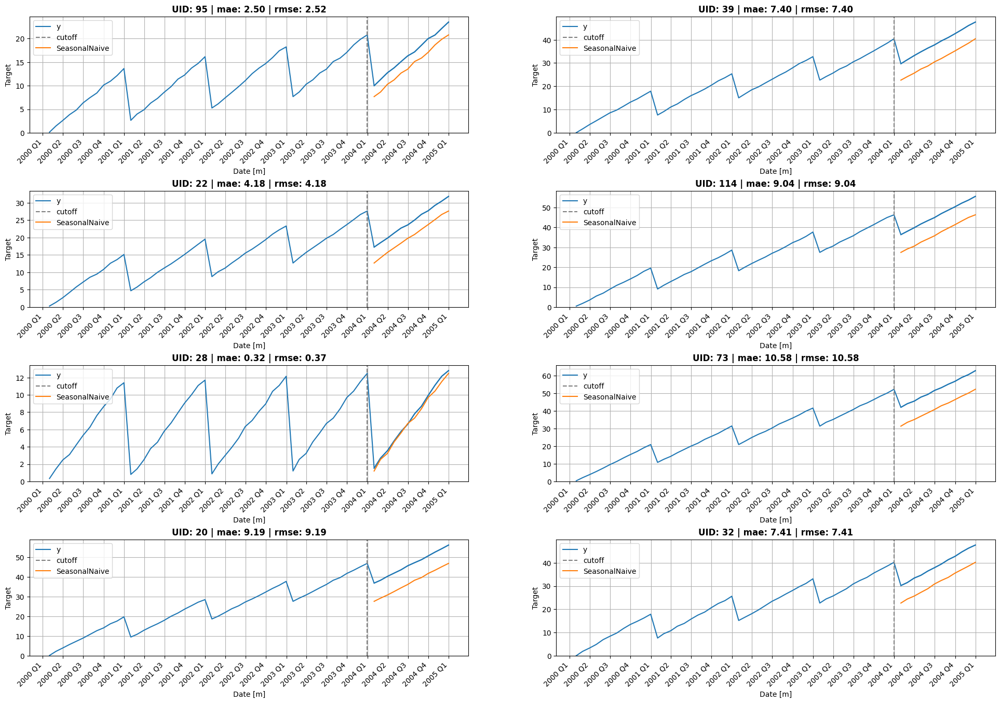
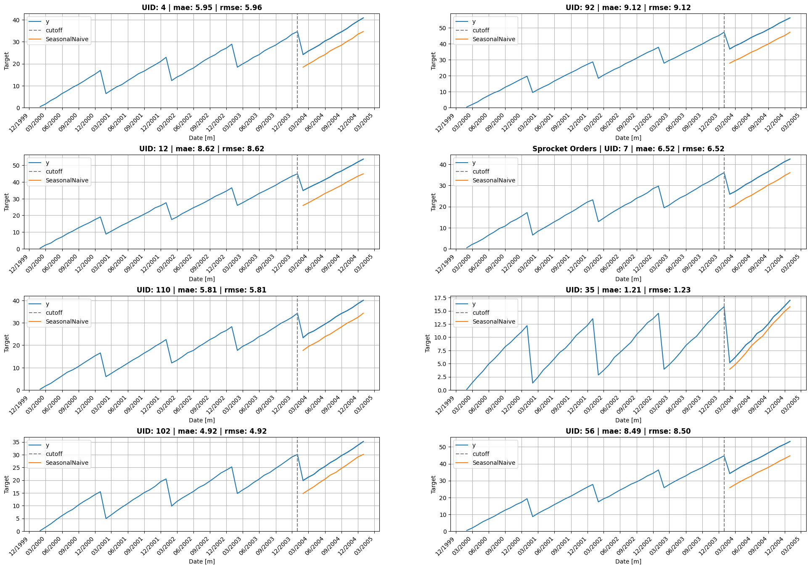
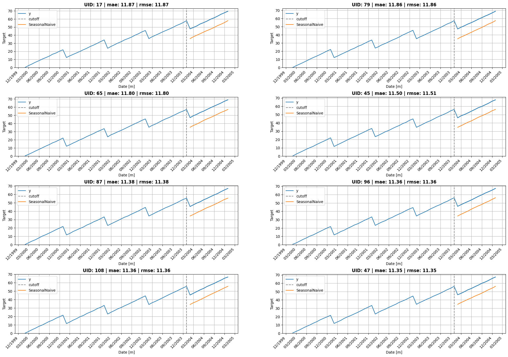
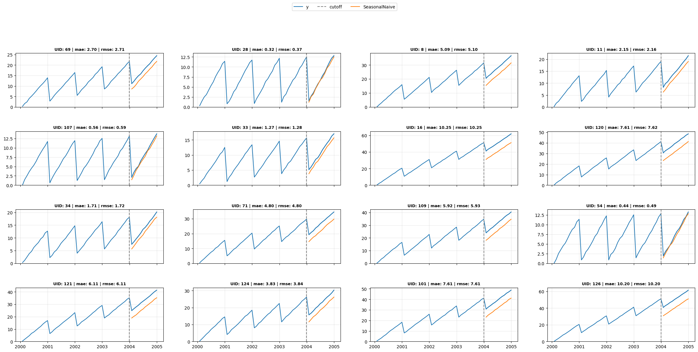

from statsforecast import StatsForecast
from statsforecast.models import SeasonalNaive, Naive, HistoricAverage
import pandas as pd
import matplotlib.pyplot as plt
import random
from itertools import product
import matplotlib.dates as mdatesfrom utilsforecast.data import generate_series
Y_df = generate_series(n_series=128, freq='ME', min_length=60, max_length=60, with_trend=True)
Y_df| unique_id | ds | y | |
|---|---|---|---|
| 0 | 0 | 2000-01-31 | 0.274407 |
| 1 | 0 | 2000-02-29 | 2.227602 |
| 2 | 0 | 2000-03-31 | 4.041396 |
| 3 | 0 | 2000-04-30 | 5.882464 |
| 4 | 0 | 2000-05-31 | 7.691857 |
| ... | ... | ... | ... |
| 7675 | 127 | 2004-08-31 | 44.923498 |
| 7676 | 127 | 2004-09-30 | 46.361813 |
| 7677 | 127 | 2004-10-31 | 48.138033 |
| 7678 | 127 | 2004-11-30 | 49.535287 |
| 7679 | 127 | 2004-12-31 | 51.424035 |
7680 rows × 3 columns
sf = StatsForecast(
models=[SeasonalNaive(season_length=12), Naive(), HistoricAverage()],
freq='ME',
n_jobs=-1
)
cv_df = sf.cross_validation(df=Y_df, h=12)
cv_df| unique_id | ds | cutoff | y | SeasonalNaive | Naive | HistoricAverage | |
|---|---|---|---|---|---|---|---|
| 0 | 0 | 2004-01-31 | 2003-12-31 | 41.918068 | 31.626313 | 51.954809 | 26.218289 |
| 1 | 0 | 2004-02-29 | 2003-12-31 | 43.812216 | 33.498739 | 51.954809 | 26.218289 |
| 2 | 0 | 2004-03-31 | 2003-12-31 | 45.785467 | 35.532154 | 51.954809 | 26.218289 |
| 3 | 0 | 2004-04-30 | 2003-12-31 | 47.589676 | 37.271197 | 51.954809 | 26.218289 |
| 4 | 0 | 2004-05-31 | 2003-12-31 | 49.734570 | 38.980048 | 51.954809 | 26.218289 |
| ... | ... | ... | ... | ... | ... | ... | ... |
| 1531 | 127 | 2004-08-31 | 2003-12-31 | 44.923498 | 36.354514 | 43.117257 | 21.773173 |
| 1532 | 127 | 2004-09-30 | 2003-12-31 | 46.361813 | 38.185409 | 43.117257 | 21.773173 |
| 1533 | 127 | 2004-10-31 | 2003-12-31 | 48.138033 | 40.096793 | 43.117257 | 21.773173 |
| 1534 | 127 | 2004-11-30 | 2003-12-31 | 49.535287 | 41.398671 | 43.117257 | 21.773173 |
| 1535 | 127 | 2004-12-31 | 2003-12-31 | 51.424035 | 43.117257 | 43.117257 | 21.773173 |
1536 rows × 7 columns
cutoff = pd.Timestamp('2003-12-31')from utilsforecast.evaluation import evaluate
from utilsforecast.losses import mae, rmse
df_eval = evaluate(cv_df, metrics=[mae, rmse], models=['SeasonalNaive', 'Naive', 'HistoricAverage'])
df_eval| unique_id | cutoff | metric | SeasonalNaive | Naive | HistoricAverage | |
|---|---|---|---|---|---|---|
| 0 | 0 | 2003-12-31 | mae | 10.385087 | 5.577062 | 26.025675 |
| 1 | 1 | 2003-12-31 | mae | 7.175618 | 4.931577 | 17.871735 |
| 2 | 2 | 2003-12-31 | mae | 4.414868 | 4.718237 | 11.174016 |
| 3 | 3 | 2003-12-31 | mae | 0.999545 | 5.029895 | 3.747323 |
| 4 | 4 | 2003-12-31 | mae | 5.954271 | 4.808348 | 14.950838 |
| ... | ... | ... | ... | ... | ... | ... |
| 251 | 123 | 2003-12-31 | rmse | 8.823970 | 5.917266 | 22.595332 |
| 252 | 124 | 2003-12-31 | rmse | 3.841348 | 5.698673 | 10.594876 |
| 253 | 125 | 2003-12-31 | rmse | 4.699834 | 5.533386 | 12.615176 |
| 254 | 126 | 2003-12-31 | rmse | 10.197017 | 6.425962 | 26.298619 |
| 255 | 127 | 2003-12-31 | rmse | 8.199264 | 5.921180 | 21.203321 |
256 rows × 6 columns
def plot_grid(df_train, df_test=None, df_eval=None, plot_random=True, model=None, level=None, ids=None, descs=None, date_fmt=None):
if model is None and df_test is not None:
models = [c for c in df_test.columns if c not in ('unique_id', 'ds', 'y', 'y_test', 'cutoff')]
assert len(models) == 1, f"Multiple models found: {models}. Please specify `model`."
model = models[0]
fig, axes = plt.subplots(4, 2, figsize = (24, 16))
unique_ids = df_train['unique_id'].unique()
assert len(unique_ids) >= 8, "Must provide at least 8 ts"
if plot_random:
unique_ids = random.sample(list(unique_ids), k=8)
else:
unique_ids = ids
for uid, (idx, idy) in zip(unique_ids, product(range(4), range(2))):
train_uid = df_train.query('unique_id == @uid')
line, = axes[idx, idy].plot(train_uid['ds'], train_uid['y'], label='y', )
train_color = line.get_color()
if df_test is not None:
test_uid = df_test.query('unique_id == @uid')
axes[idx, idy].axvline(x=test_uid['cutoff'].iloc[0], color='grey', linestyle='--', label='cutoff')
for col in ['y', f'{model}', 'y_test']:
if col in test_uid:
if col == 'y': axes[idx, idy].plot(test_uid['ds'], test_uid[col], color=train_color, label='_nolegend_')
else: axes[idx, idy].plot(test_uid['ds'], test_uid[col], label=col)
if level is not None:
for l, alpha in zip(sorted(level), [0.5, .4, .35, .2]):
axes[idx, idy].fill_between(
test_uid['ds'],
test_uid[f'{model}-lo-{l}'],
test_uid[f'{model}-hi-{l}'],
alpha=alpha,
color='orange',
label=f'{model}_level_{l}',
)
# Build title — include MAE if eval data is available
title = f'UID: {uid}'
if descs is not None and uid in descs['unique_id'].values:
title = f"{descs.query('unique_id == @uid')['desc'].values[0]} | {title}"
if df_eval is not None and model is not None:
eval_uid = df_eval.query('unique_id == @uid')
if not eval_uid.empty and model in eval_uid.columns:
metrics = ' | '.join(f'{r.metric}: {r[model]:.2f}' for _, r in eval_uid.iterrows())
title += f' | {metrics}'
axes[idx, idy].set_title(title, fontweight='bold')
axes[idx, idy].set_xlabel('Date [m]')
axes[idx, idy].set_ylabel('Target')
axes[idx, idy].set_ylim(bottom=0)
axes[idx, idy].legend(loc='upper left')
if date_fmt in ('month', 'monthly'):
axes[idx, idy].xaxis.set_major_locator(mdates.MonthLocator(interval=3))
axes[idx, idy].xaxis.set_major_formatter(mdates.DateFormatter('%m/%Y'))
elif date_fmt == 'quarter':
axes[idx, idy].xaxis.set_major_locator(mdates.MonthLocator(bymonth=[1,4,7,10]))
axes[idx, idy].xaxis.set_major_formatter(plt.FuncFormatter(lambda x, _: f"{mdates.num2date(x):%Y} Q{(mdates.num2date(x).month-1)//3+1}"))
if date_fmt: plt.setp(axes[idx, idy].xaxis.get_majorticklabels(), rotation=45, ha='right')
axes[idx, idy].grid()
fig.subplots_adjust(hspace=0.5)
plt.show()
return Nonedescs = pd.DataFrame(dict(unique_id=[0, 3, 7], desc=['Widget Sales', 'Gizmo Revenue', 'Sprocket Orders']))plot_grid(Y_df, cv_df.query("cutoff == @cutoff"),
df_eval.query("cutoff == @cutoff"),
model='SeasonalNaive', descs=descs, date_fmt="quarter")
plot_grid(Y_df, cv_df.query("cutoff == @cutoff"),
df_eval.query("cutoff == @cutoff"),
model='SeasonalNaive', descs=descs, date_fmt="month")
def select_uids(df_eval, model, metric='mae', mode='random', k=8):
"Select k unique_ids: 'random', 'top' (best), or 'flop' (worst) by metric"
sub = df_eval.query("metric == @metric")
if mode == 'random': return random.sample(list(sub['unique_id'].unique()), k=k)
ascending = mode == 'top'
return sub.nsmallest(k, model)['unique_id'].tolist() if ascending else sub.nlargest(k, model)['unique_id'].tolist()uids = select_uids(df_eval.query("cutoff == @cutoff"), 'SeasonalNaive', metric='mae', mode='flop')
plot_grid(Y_df, cv_df.query("cutoff == @cutoff"),
df_eval.query("cutoff == @cutoff"),
model='SeasonalNaive', plot_random=False, ids=uids, date_fmt="month")
def plot_grid_compact(df_train, df_test=None, df_eval=None, model=None, level=None, ids=None, descs=None, date_fmt=None, ncols=4, figw=28, rowh=3):
if model is None and df_test is not None:
models = [c for c in df_test.columns if c not in ('unique_id', 'ds', 'y', 'y_test', 'cutoff')]
assert len(models) == 1, f"Multiple models found: {models}. Please specify `model`."
model = models[0]
if ids is None: ids = random.sample(list(df_train['unique_id'].unique()), k=min(16, len(df_train['unique_id'].unique())))
nrows = -(-len(ids) // ncols)
fig, axes = plt.subplots(nrows, ncols, figsize=(figw, rowh * nrows), sharex='col', squeeze=False)
handles, labels = [], []
for i, uid in enumerate(ids):
r, c = divmod(i, ncols)
ax = axes[r][c]
train_uid = df_train.query('unique_id == @uid')
line, = ax.plot(train_uid['ds'], train_uid['y'], label='y')
train_color = line.get_color()
if df_test is not None:
test_uid = df_test.query('unique_id == @uid')
ax.axvline(x=test_uid['cutoff'].iloc[0], color='grey', linestyle='--', label='cutoff')
for col in ['y', f'{model}', 'y_test']:
if col not in test_uid: continue
if col == 'y': ax.plot(test_uid['ds'], test_uid[col], color=train_color, label='_nolegend_')
else: ax.plot(test_uid['ds'], test_uid[col], label=col)
if level is not None:
for l, alpha in zip(sorted(level), [0.5, .4, .35, .2]):
ax.fill_between(test_uid['ds'], test_uid[f'{model}-lo-{l}'], test_uid[f'{model}-hi-{l}'], alpha=alpha, color='orange', label=f'{model}_level_{l}')
title = f'UID: {uid}'
if descs is not None and uid in descs['unique_id'].values:
title = f"{descs.query('unique_id == @uid')['desc'].values[0]} | {title}"
if df_eval is not None and model is not None:
eval_uid = df_eval.query('unique_id == @uid')
if not eval_uid.empty and model in eval_uid.columns:
metrics = ' | '.join(f'{r.metric}: {r[model]:.2f}' for _, r in eval_uid.iterrows())
title += f' | {metrics}'
ax.set_title(title, fontsize=9, fontweight='bold')
ax.set_ylim(bottom=0)
ax.grid(True, alpha=0.3)
if i == 0: handles, labels = ax.get_legend_handles_labels()
if date_fmt in ('month', 'monthly'):
ax.xaxis.set_major_locator(mdates.MonthLocator(interval=3))
ax.xaxis.set_major_formatter(mdates.DateFormatter('%m/%Y'))
elif date_fmt == 'quarter':
ax.xaxis.set_major_locator(mdates.MonthLocator(bymonth=[1,4,7,10]))
ax.xaxis.set_major_formatter(plt.FuncFormatter(lambda x, _: f"{mdates.num2date(x):%Y} Q{(mdates.num2date(x).month-1)//3+1}"))
if date_fmt and r == nrows - 1: plt.setp(ax.xaxis.get_majorticklabels(), rotation=45, ha='right')
for i in range(len(ids), nrows * ncols): axes[divmod(i, ncols)].set_visible(False)
fig.legend(handles, labels, loc='upper center', ncol=len(labels), bbox_to_anchor=(0.5, 1.02), fontsize=10)
fig.subplots_adjust(hspace=0.45)
plt.show()plot_grid_compact(Y_df, cv_df.query("cutoff == @cutoff"), df_eval.query("cutoff == @cutoff"), model='SeasonalNaive', descs=descs)